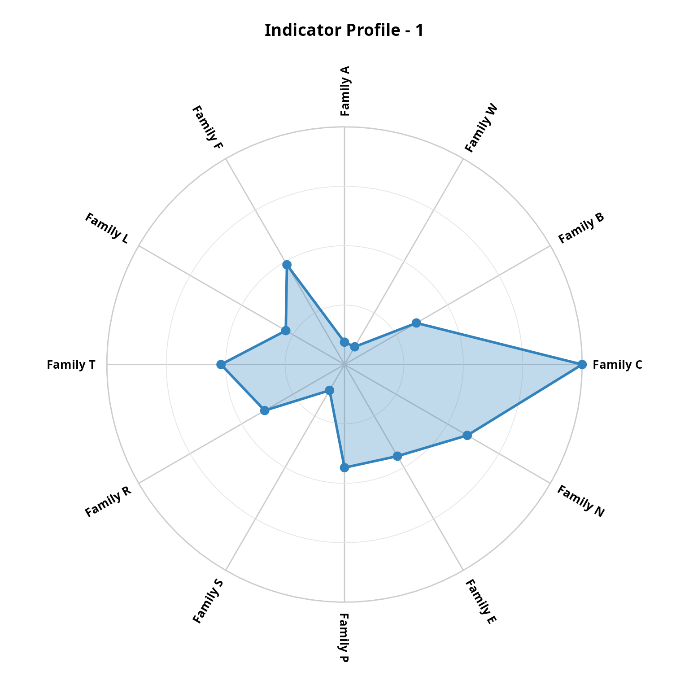
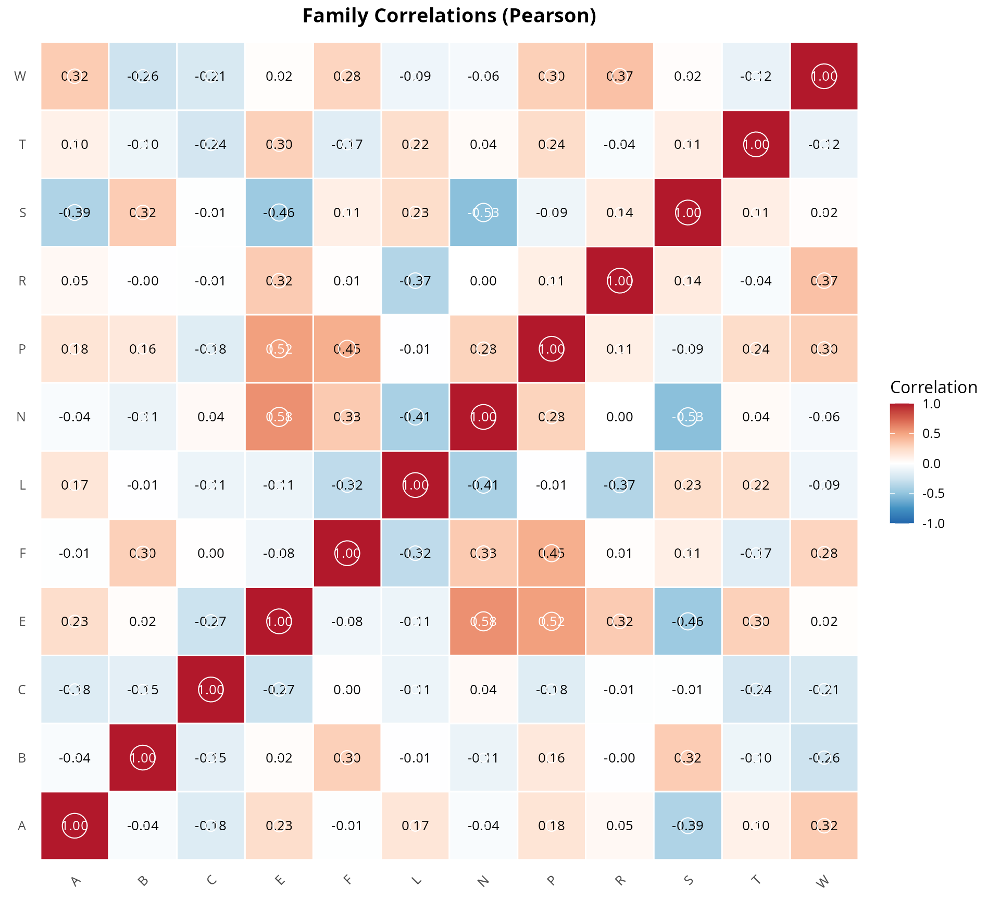
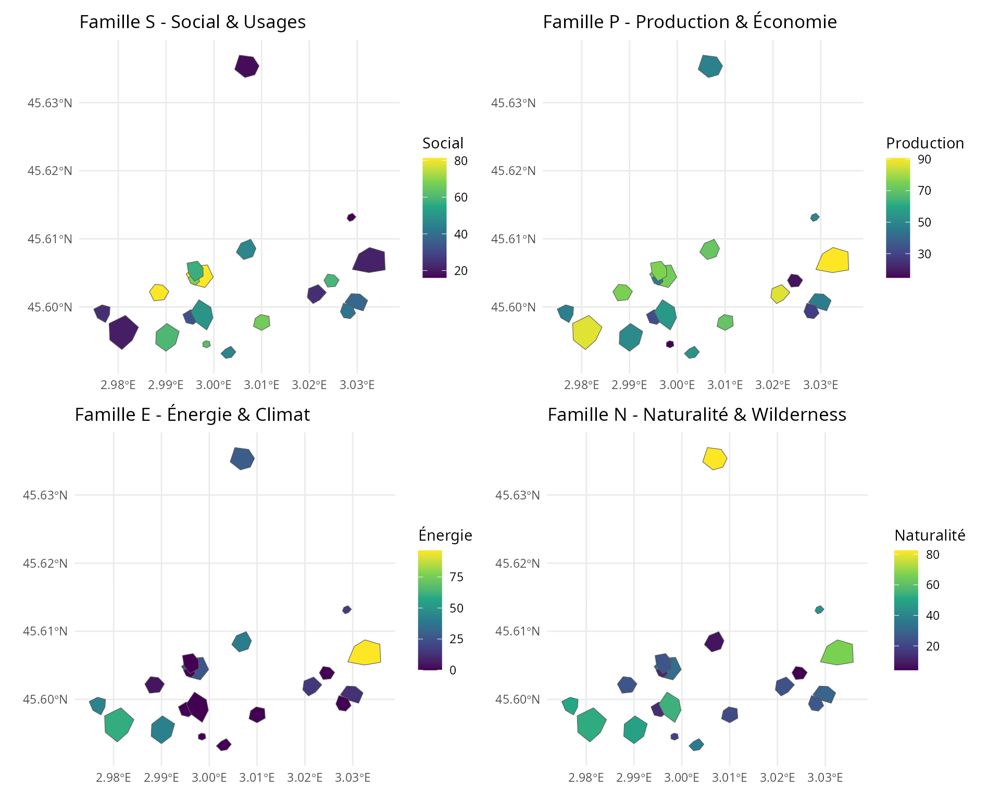
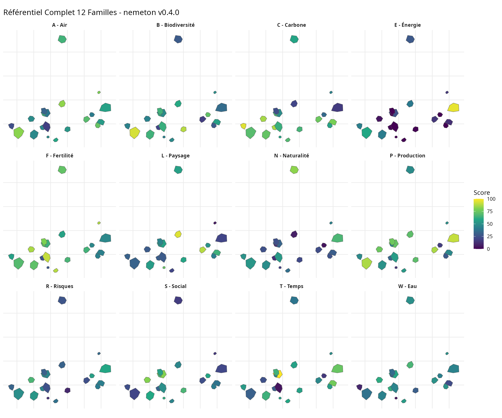
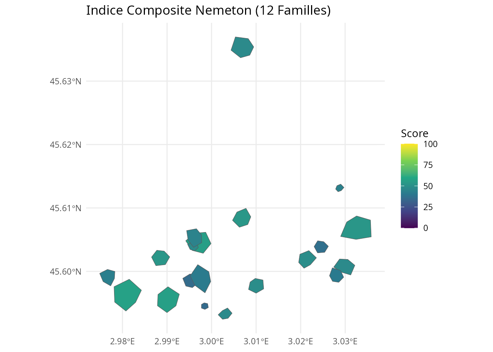
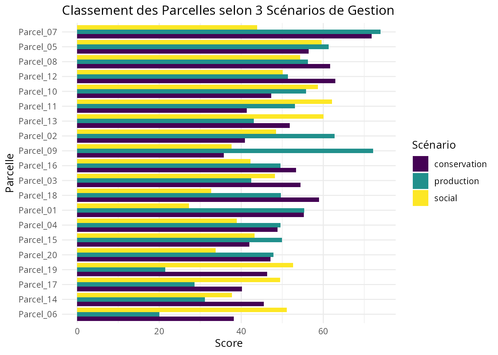

Référentiel Complet 12 Familles
Pascal Obstétar
2026-01-06
Source:vignettes/complete-referential_fr.Rmd
complete-referential_fr.RmdIntroduction
Avec la version 0.4.0, le package nemeton propose un
référentiel complet de 12 familles d’indicateurs pour
l’évaluation multi-critères des services écosystémiques forestiers.
Cette vignette démontre l’utilisation de l’ensemble du référentiel avec
le jeu de données étendu massif_demo_units_extended.
Les 12 Familles
| Code | Famille | Indicateurs | Version |
|---|---|---|---|
| C | Carbone & Vitalité | C1 (biomasse), C2 (NDVI) | v0.2.0 |
| B | Biodiversité | B1 (protection), B2 (structure), B3 (connectivité) | v0.3.0 |
| W | Eau | W1 (réseau hydro), W2 (zones humides), W3 (TWI) | v0.2.0 |
| A | Air & Microclimat | A1 (couverture), A2 (qualité air) | v0.3.0 |
| F | Fertilité des Sols | F1 (fertilité), F2 (érosion) | v0.2.0 |
| L | Paysage | L1 (fragmentation), L2 (lisière) | v0.2.0 |
| T | Temps & Dynamique | T1 (ancienneté), T2 (changements) | v0.3.0 |
| R | Risques & Résilience | R1 (incendie), R2 (tempête), R3 (stress) | v0.3.0 |
| S | Social & Usages | S1 (sentiers), S2 (accessibilité), S3 (proximité) | v0.4.0 |
| P | Production & Économie | P1 (volume), P2 (productivité), P3 (qualité) | v0.4.0 |
| E | Énergie & Climat | E1 (bois-énergie), E2 (évitement CO2) | v0.4.0 |
| N | Naturalité & Wilderness | N1 (distance infra), N2 (continuité), N3 (composite) | v0.4.0 |
Chargement des Données
# Le jeu de données étendu avec toutes les 12 familles est disponible via LazyData
# Aperçu des données
head(massif_demo_units_extended)
#> Simple feature collection with 6 features and 81 fields
#> Geometry type: POLYGON
#> Dimension: XY
#> Bounding box: xmin: 698041.8 ymin: 6499388 xmax: 702507.7 ymax: 6504159
#> Projected CRS: RGF93 v1 / Lambert-93
#> parcel_id forest_type age_class management surface_ha
#> 1 P01 Futaie mixte Mature Mixte 4.989211
#> 2 P02 Futaie résineuse Moyen Production 5.867935
#> 3 P03 Futaie feuillue Surannée Conservation 6.557777
#> 4 P04 Futaie feuillue Surannée Production 9.989553
#> 5 P05 Futaie résineuse Moyen Production 5.906395
#> 6 P06 Futaie résineuse Mature Production 1.048296
#> geometry id name species area_ha C1
#> 1 POLYGON ((698299.9 6499928,... 1 Parcel_01 FASY 4.989211 258.9182
#> 2 POLYGON ((701702.2 6500418,... 2 Parcel_02 PIAB 5.867935 228.1229
#> 3 POLYGON ((702240.4 6500270,... 3 Parcel_03 QUPE 6.557777 193.5217
#> 4 POLYGON ((700641.3 6504129,... 4 Parcel_04 ABAL 9.989553 187.2273
#> 5 POLYGON ((699268.2 6500307,... 5 Parcel_05 PISY 5.906395 269.4859
#> 6 POLYGON ((699943.5 6499421,... 6 Parcel_06 QURO 1.048296 277.5413
#> C2 B1 B2 B3 W1 W2 W3 A1
#> 1 0.03279953 0 2.556369 0.8262637 0.1862923 1.119890 5.089475 0.5293842
#> 2 0.01631406 0 2.387431 0.3583569 0.5393849 8.374436 8.400556 0.6934514
#> 3 0.03085372 2 2.482645 0.6591732 0.4476438 2.896998 6.050851 1.0000000
#> 4 0.00574035 0 2.177975 0.6150537 1.1437187 4.913373 8.110192 0.8866660
#> 5 0.01794201 1 2.455282 0.6392320 1.0737964 3.125075 13.072421 0.5849180
#> 6 -0.02087305 2 1.853111 0.5374482 0.0000000 0.000000 5.470996 0.3000000
#> A2 F1 F2 L1 L2 T1 T2 R1 R2 R3
#> 1 41.31477 3 15.017516 0.2521898 0.3017459 88.06364 11.324896 1 4 0.3397302
#> 2 54.25911 3 18.802915 0.5743217 0.3891689 82.82317 9.198844 1 2 0.5299777
#> 3 40.10522 3 8.778060 0.3701597 0.4164985 126.47324 14.819030 2 3 0.5582243
#> 4 47.07552 4 16.643021 0.3389725 0.3934184 62.19125 9.117684 1 3 0.3980824
#> 5 48.98128 4 23.180358 0.3539412 0.1889777 10.00000 11.052026 3 3 0.8985756
#> 6 56.56038 2 6.919386 0.3858981 0.4691661 130.42042 6.040972 1 1 0.4755124
#> S1 S2 S3 P1 P2 P3 E1 E2
#> 1 0.473262981 49.06710 1904.090 383.7837 2.000000 65.29495 0.6332431 1.286294
#> 2 0.004570495 77.80352 1000.000 303.2654 10.150362 84.57162 0.5003880 1.135298
#> 3 0.963719475 51.13707 2866.255 268.2949 4.796243 60.26851 0.5000000 1.037217
#> 4 0.817609054 20.00000 1000.000 250.9696 6.134844 56.03258 0.5000000 1.679691
#> 5 1.162277601 75.09220 15643.478 317.5492 8.705667 73.76151 0.5239562 0.500000
#> 6 1.556537495 70.17784 4351.499 50.0000 4.414458 39.45421 0.5000000 0.500000
#> N1 N2 N3 C1_norm C2_norm B1_norm B2_norm B3_norm
#> 1 1823.0542 200.27051 73.73125 91.81550 98.02844 0.00000 41.55096 90.87085
#> 2 670.1452 125.83536 52.89941 78.28157 72.74375 0.00000 35.94171 17.21558
#> 3 1365.9276 101.35012 50.19713 63.07502 95.04404 66.66667 39.10309 64.56840
#> 4 2734.2239 384.00619 100.00000 60.30875 56.52626 0.00000 28.98713 57.62336
#> 5 628.5385 238.93704 46.84107 96.45981 75.24062 33.33333 38.19456 61.42937
#> 6 1259.2921 20.07441 37.03275 100.00000 15.70780 66.66667 18.20065 45.40713
#> W1_norm W2_norm W3_norm A1_norm A2_norm F1_norm F2_norm L1_norm
#> 1 9.782561 10.45221 9.242271 32.76917 15.769170 50 63.53406 10.97026
#> 2 28.324119 78.16072 46.156887 56.20735 83.462924 50 79.54881 100.00000
#> 3 23.506618 27.03841 19.960465 100.00000 9.443733 50 37.13702 43.57440
#> 4 60.058825 45.85774 42.919675 83.80943 45.895638 75 70.41103 34.95499
#> 5 56.387074 29.16711 98.242638 40.70258 55.861977 75 98.06830 39.09197
#> 6 0.000000 0.00000 13.495779 0.00000 95.497643 25 29.27359 47.92413
#> L2_norm T1_norm T2_norm R1_norm R2_norm R3_norm S1_norm S2_norm
#> 1 51.69377 57.29425 50.93189 0 75 21.27261 30.4048558 36.33387
#> 2 76.91820 53.44804 39.76386 0 25 48.07374 0.2936322 72.25440
#> 3 84.80367 85.48470 69.28638 25 50 52.05299 61.9143116 38.92133
#> 4 78.14431 38.30539 39.33753 0 50 29.49298 52.5274243 0.00000
#> 5 19.15645 0.00000 49.49852 50 50 100.00000 74.6707102 68.86525
#> 6 100.00000 88.38171 23.17574 0 0 40.40094 100.0000000 62.72230
#> S3_norm P1_norm P2_norm P3_norm E1_norm E2_norm N1_norm
#> 1 6.174013 79.52972 0.00000 63.53244 48.4520928 37.35401 66.05463
#> 2 0.000000 60.34486 100.00000 100.00000 0.1410856 30.18071 23.10333
#> 3 12.744614 52.01252 34.30821 54.02344 0.0000000 25.52125 49.02451
#> 4 0.000000 47.88446 50.73203 46.00991 0.0000000 56.04287 100.00000
#> 5 100.000000 63.74822 82.27447 79.54946 8.7113699 0.00000 21.55329
#> 6 22.887318 0.00000 29.62394 14.64700 0.0000000 0.00000 45.05183
#> N2_norm N3_norm family_C family_B family_W family_A family_F family_L
#> 1 24.049640 62.55485 94.92197 44.14061 9.825682 24.26917 56.76703 31.33202
#> 2 14.560032 32.85982 75.51266 17.71910 50.880574 69.83514 64.77440 88.45910
#> 3 11.438453 29.00781 79.05953 56.77938 23.501831 54.72187 43.56851 64.18903
#> 4 47.473781 100.00000 58.41750 28.87016 49.612081 64.85253 72.70551 56.54965
#> 5 28.979168 24.22387 85.85022 44.31909 61.265609 48.28228 86.53415 29.12421
#> 6 1.076754 10.24246 57.85390 43.42482 4.498593 47.74882 27.13680 73.96207
#> family_T family_R family_S family_P family_E family_N
#> 1 54.11307 32.09087 24.30425 47.68739 42.903050 50.88637
#> 2 46.60595 24.35791 24.18268 86.78162 15.160900 23.50773
#> 3 77.38554 42.35100 37.86009 46.78139 12.760627 29.82359
#> 4 38.82146 26.49766 17.50914 48.20880 28.021436 82.49126
#> 5 24.74926 66.66667 81.17865 75.19072 4.355685 24.91877
#> 6 55.77872 13.46698 61.86987 14.75698 0.000000 18.79035Créer les Indices de Famille
Le système de famille permet d’agréger les indicateurs individuels en indices synthétiques par famille :
# Créer tous les indices de famille (12 familles)
# create_family_index() détecte automatiquement toutes les familles par préfixe
result <- create_family_index(massif_demo_units_extended)
# Afficher les indices de famille
result %>%
sf::st_drop_geometry() %>%
select(name, starts_with("family_")) %>%
head()
#> name family_C family_B family_W family_A family_F family_L family_T
#> 1 Parcel_01 94.92197 44.14061 9.825682 24.26917 56.76703 31.33202 54.11307
#> 2 Parcel_02 75.51266 17.71910 50.880574 69.83514 64.77440 88.45910 46.60595
#> 3 Parcel_03 79.05953 56.77938 23.501831 54.72187 43.56851 64.18903 77.38554
#> 4 Parcel_04 58.41750 28.87016 49.612081 64.85253 72.70551 56.54965 38.82146
#> 5 Parcel_05 85.85022 44.31909 61.265609 48.28228 86.53415 29.12421 24.74926
#> 6 Parcel_06 57.85390 43.42482 4.498593 47.74882 27.13680 73.96207 55.77872
#> family_R family_S family_P family_E family_N
#> 1 32.09087 24.30425 47.68739 42.903050 50.88637
#> 2 24.35791 24.18268 86.78162 15.160900 23.50773
#> 3 42.35100 37.86009 46.78139 12.760627 29.82359
#> 4 26.49766 17.50914 48.20880 28.021436 82.49126
#> 5 66.66667 81.17865 75.19072 4.355685 24.91877
#> 6 13.46698 61.86987 14.75698 0.000000 18.79035Visualisation Radar 12-Axes
Le radar 12-axes permet de visualiser le profil complet d’une parcelle sur l’ensemble des 12 familles :
# Radar pour la parcelle 1 (toutes les 12 familles)
nemeton_radar(
result,
unit_id = 1,
mode = "family"
)
Analyse Croisée Inter-Familles
Matrice de Corrélation
# Calculer les corrélations entre toutes les familles
families_all <- c("family_C", "family_B", "family_W", "family_A",
"family_F", "family_L", "family_T", "family_R",
"family_S", "family_P", "family_E", "family_N")
correlations <- compute_family_correlations(result, families = families_all)
# Visualiser la matrice de corrélation
plot_correlation_matrix(correlations)
Hotspots Multi-Critères
Identifier les parcelles qui excellent simultanément sur plusieurs familles :
# Hotspots pour conservation (C, B, N)
hotspots_conservation <- identify_hotspots(
result,
families = c("family_C", "family_B", "family_N"),
threshold = 0.7,
min_families = 2
)
# Hotspots pour production durable (P, C, E)
hotspots_production <- identify_hotspots(
result,
families = c("family_P", "family_C", "family_E"),
threshold = 0.7,
min_families = 2
)
# Hotspots pour services sociaux (S, A, L)
hotspots_social <- identify_hotspots(
result,
families = c("family_S", "family_A", "family_L"),
threshold = 0.7,
min_families = 2
)
# Afficher les hotspots
table(hotspots_conservation$is_hotspot)
#>
#> TRUE
#> 20
table(hotspots_production$is_hotspot)
#>
#> TRUE
#> 20
table(hotspots_social$is_hotspot)
#>
#> FALSE TRUE
#> 1 19Cartographie Multi-Familles
Familles Nouvelles (v0.4.0)
# Visualiser les nouvelles familles S, P, E, N
library(patchwork)
p_social <- ggplot(result) +
geom_sf(aes(fill = family_S)) +
scale_fill_viridis_c(name = "Social") +
labs(title = "Famille S - Social & Usages") +
theme_minimal()
p_production <- ggplot(result) +
geom_sf(aes(fill = family_P)) +
scale_fill_viridis_c(name = "Production") +
labs(title = "Famille P - Production & Économie") +
theme_minimal()
p_energy <- ggplot(result) +
geom_sf(aes(fill = family_E)) +
scale_fill_viridis_c(name = "Énergie") +
labs(title = "Famille E - Énergie & Climat") +
theme_minimal()
p_naturalness <- ggplot(result) +
geom_sf(aes(fill = family_N)) +
scale_fill_viridis_c(name = "Naturalité") +
labs(title = "Famille N - Naturalité & Wilderness") +
theme_minimal()
(p_social + p_production) / (p_energy + p_naturalness)
Toutes les Familles
# Créer une facette pour toutes les 12 familles
result_long <- result %>%
sf::st_drop_geometry() %>%
tidyr::pivot_longer(
cols = starts_with("family_"),
names_to = "famille",
values_to = "valeur"
) %>%
left_join(
result %>% select(name, geometry),
by = "name"
) %>%
sf::st_as_sf()
# Labels des familles pour la facette
family_labels <- c(
family_C = "C - Carbone",
family_B = "B - Biodiversité",
family_W = "W - Eau",
family_A = "A - Air",
family_F = "F - Fertilité",
family_L = "L - Paysage",
family_T = "T - Temps",
family_R = "R - Risques",
family_S = "S - Social",
family_P = "P - Production",
family_E = "E - Énergie",
family_N = "N - Naturalité"
)
ggplot(result_long) +
geom_sf(aes(fill = valeur)) +
facet_wrap(~ famille, ncol = 4, labeller = labeller(famille = family_labels)) +
scale_fill_viridis_c(name = "Score") +
labs(title = "Référentiel Complet 12 Familles - nemeton v0.4.0") +
theme_minimal() +
theme(
strip.text = element_text(face = "bold"),
axis.text = element_blank(),
axis.ticks = element_blank()
)
Normalisation et Indice Composite
# Normaliser tous les indicateurs
result_norm <- normalize_indicators(
result,
indicators = c(paste0("C", 1:2), paste0("B", 1:3), paste0("W", 1:3),
paste0("A", 1:2), paste0("F", 1:2), paste0("L", 1:2),
paste0("T", 1:2), paste0("R", 1:3), paste0("S", 1:3),
paste0("P", 1:3), paste0("E", 1:2), paste0("N", 1:3)),
method = "minmax"
)
# Créer un indice composite global (toutes familles)
result_composite <- create_composite_index(
result_norm,
indicators = families_all,
weights = rep(1, 12), # Poids égaux pour toutes les familles
name = "nemeton_index_12"
)
# Visualiser l'indice composite
ggplot(result_composite) +
geom_sf(aes(fill = nemeton_index_12)) +
scale_fill_viridis_c(name = "Score", limits = c(0, 100)) +
labs(title = "Indice Composite Nemeton (12 Familles)") +
theme_minimal()
Comparaison de Scénarios
# Créer différents indices pour différents objectifs de gestion
# Scénario 1: Conservation intégrale
composite_conservation <- create_composite_index(
result_norm,
indicators = c("family_C", "family_B", "family_W", "family_N"),
weights = c(0.3, 0.4, 0.15, 0.15),
name = "conservation"
)
# Scénario 2: Production durable
composite_production <- create_composite_index(
result_norm,
indicators = c("family_P", "family_E", "family_F", "family_C"),
weights = c(0.4, 0.25, 0.2, 0.15),
name = "production"
)
# Scénario 3: Services sociaux
composite_social <- create_composite_index(
result_norm,
indicators = c("family_S", "family_A", "family_L", "family_R"),
weights = c(0.35, 0.25, 0.2, 0.2),
name = "social"
)
# Comparer les scénarios
comparison <- result %>%
mutate(
conservation = composite_conservation$conservation,
production = composite_production$production,
social = composite_social$social
) %>%
sf::st_drop_geometry() %>%
select(name, conservation, production, social) %>%
tidyr::pivot_longer(cols = -name, names_to = "scenario", values_to = "score")
# Visualiser le classement des parcelles selon les scénarios
ggplot(comparison, aes(x = reorder(name, score), y = score, fill = scenario)) +
geom_col(position = "dodge") +
coord_flip() +
scale_fill_viridis_d() +
labs(
title = "Classement des Parcelles selon 3 Scénarios de Gestion",
x = "Parcelle",
y = "Score",
fill = "Scénario"
) +
theme_minimal()
Conclusion
Cette vignette a démontré l’utilisation complète du référentiel 12 familles de nemeton v0.4.0. Le package permet maintenant :
- Évaluation holistique : Couvre l’ensemble des dimensions des services écosystémiques (biophysiques, écologiques, sociaux, économiques)
- Flexibilité : Possibilité de créer des indices composites adaptés à différents objectifs de gestion
- Analyse croisée : Identification des synergies et trade-offs entre familles
- Visualisation : Radars 12-axes, cartes multi-familles, matrices de corrélation
Pour aller plus loin, consultez la vignette “Multi-Criteria Optimization” qui présente les outils d’analyse Pareto, de clustering et de trade-off analysis.